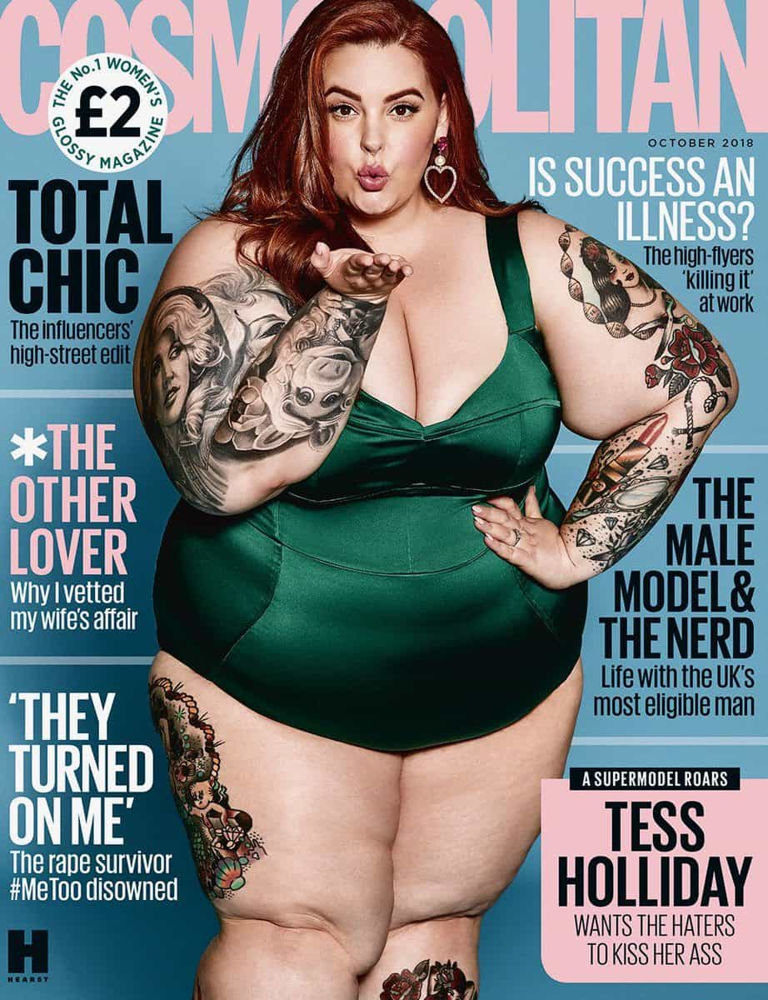
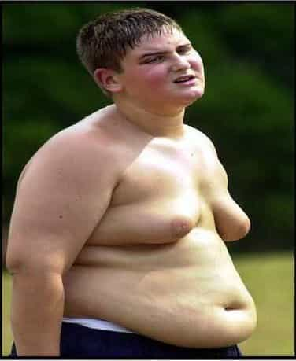

Anna O’Brien is a figure in the trend known as body positivity or fat acceptance. She’s no stranger to controversy. In the past, she’s managed to turn bad publicity into an opportunity to model plus-sized clothing. That’s turning lemons into lemonade, right?
She’s also appeared on a Daily Mail article, featured with her skinny friend who is tatted-up and has a rather odd haircut. Cool deal, having friends is all well and good. I hang with my friends too sometimes, but that hasn’t made international news yet. Well, that’s probably a good thing.
All told, perhaps she likes publicity. Recently, she made a bit of a splash in Times Square, memorialized in a July 3 Instagram post.
The bikini incident
Phryne had a few too many cheeseburgers.
A Cosmopolitan article described the scene. It begins with her nervously stripping down to a bikini. The reaction was unexpected:
“I want to suck on them tasty toes.”
“Hey baby, let me butter them biscuits for you.”
I looked up to see three men with camera phones filming me. Our eyes met, and one uttered, “Twerk for the camera baby, show them how that ass clap.”
Tears began to well up. I was prepared to be pointed at, shamed, and called fat. I didn’t expect to be fetishized.
Okay, so some guys are into that, and apparently foot fetishes too, though that was pretty bad game on their part. Also, they forgot the number one rule of living in New Yawk City: “Don’t get invuolved.”
That said, doing socially inappropriate things often gets a socially inappropriate reaction of some sort. I wouldn’t care to walk through Manhattan in a Speedo, even if I looked like a movie star. (If I’d done so back when I was forty pounds heavier, I would’ve felt guilty of a crime against humanity.) Anyway, exhibitionism in Times Square is nothing new, though it traditionally involves guys in long trench coats.
Still, another detail made O’Brien indignant:
Fifty feet to my right in the busy, tourist-filled space were two thin, large-busted women, wearing only g-strings and some body paint. I watched them with envy. Nobody yelled at them as they worked to hustle up a few dollars selling photos with eager tourists. They were just another part of New York.”
Well, heck, it sounds like she too could’ve made some dough selling pictures! After basically some more of the same, and then a lame fat joke, a crowd gathered and she began her planned photo shoot:
“Now I was safely in model mode. Pose. Click. Pose. Click. Magic.
Still, as I turned around for some side-angle shots, I noticed one of the men had continued to film me from behind. In nearly every image I have, you can see him standing there, holding his camera-phone up at the perfect height to capture my backside. I was faceless to him. I was just a body he wanted to exploit and use. My feelings didn’t matter.
At the end, a little girl addresses her:
I waved at her, and she returned my gesture with the biggest grin.
“You’re pretty,” she whispered.
I realized in that moment, it had all been worth it. I had been seen.
What was this all about?
So her crew can film her, but it’s bad when anyone else does?
Likely the guy filming throughout was the one in black (rather “plus-sized” himself), standing behind the stunned-looking lady in the blue-green blouse. Perhaps he was one of the ones making crude remarks, though it’s not clear. Bad game notwithstanding, the conclusion is still a bit of a stretch. Since she was in public, with her own camera crew shooting her wearing a provocative outfit, why was it wrong for someone else to take pictures too?
Since she drew some conclusions about his motivations, it’s not unfair if I guess about hers. It seems that O’Brien wanted attention. That’s why people put themselves on display, right? Well, she got attention!
In summary, crowd reactions included:
- Negative (the fat joke)
- Moderately positive (the little girl)
- Excessively positive (the chubby chasers)
Perhaps she only wanted polite congratulations for bravery in defying conventional standards and all that jazz. However, the chubby chaser reaction was the major topic. So she disliked feeling objectified and so on, which occurred after putting herself in a situation certain to get a reaction.
However there’s an upside. It gained more media attention, which (as in the past) may help promote her supersized clothing model career. Perhaps it’s the “all publicity is good publicity” principle. She got to blow off steam about it too. Maybe she’s one of those people who get their kicks from being offended, creating opportunities to generate drama. (This seems similar to the “yellow zebra print lady” incident. Some attention-harlotry is politically motivated and geared to generate outrage.) Either way, it’s basically a win-win for her.
What’s up with Cosmopolitan?

At least they edited out most of the cellulite.
Cosmo seems a rather odd venue for the topic. Isn’t “THOTs of the world, unite!” their major shtick?
Apparently, things are changing at their editorial offices. Their October 2018 edition continues the trend, controversially featuring a very hefty Tess Holiday. Granted, she has a modestly cute face and appealing hair, but in a couple of other rather obvious ways, she’s not exactly the typical Cosmo cover girl.
I’m okay with the curvy look, but within sensible limits. This supersized business is getting excessive, to put it kindly. Why try to make extreme obesity fashionable?
If they won’t cover the health angle, we will
Despite appearances, O’Brien has been into fitness for years. Hey, at least she’s trying. For those who aren’t making expected progress, lessons learned are the following:
- Aerobics only gets you so far. Lift heavy, especially if your day job doesn’t include it.
- If your routine isn’t providing forward momentum, then take things to the next level. Gradual advancement (weight lifted, increasing reps, and improved form) should be happening.
- Exercise is great, but a caloric deficit is still necessary to lose weight. Put down those cheeseburgers!
- If you’re stuck in a rut, do some research or get some coaching. Also see a doctor to find out if you have a problem such as a hormonal imbalance.
- Keep a realistic self-assessment of where you’re at.
-
Motivation is essential; banish discouragement immediately.
Other than that, morbid obesity is clearly unhealthy. ROK promotes self-improvement. We don’t want people to suffer. Those who don’t listen to us should at least listen to their doctors.
What a crowd thinks is one thing; living longer and healthier is its own reward. Note well, I’m not trying to rain on anyone’s parade here. It’s not my intention to demoralize O’Brien or anyone else out there who is struggling, which many people are these days.
This is a problem

Dude, pull yourself together!
Junk food and easy living are taking their toll. This point became quite clear when I took a trip to another city recently, and saw several guys who probably weighed five hundred pounds, if not more. It was a deeply saddening experience.
Whether it’s a matter of hitting the gym, cutting out crappy GMO food and garbage loaded with partially hydrogenated grease, or whatever, it takes fixing care of the problem is pretty damned important. For those out there who are discouraged, do something and don’t ever give up.
Don’t miss Beau’s book catalog. Good stuff!
Read More: Children Are Being Brainwashed Into Accepting Fat Acceptance